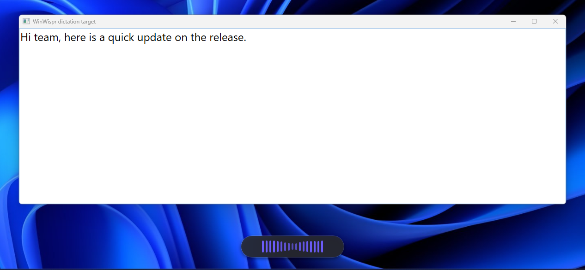

Dictation
Talk into any text field
Hold the hotkey and speak. A small capsule shows that WinWispr is listening, and the transcript lands where your cursor was: mail, chat, code editor or browser.
- Hold to talk, or press once to start and again to stop
- Personal dictionary for names and terms it gets wrong
- German voice commands for paragraphs, new lines and bullets
- Lost a paste? Ctrl Alt V puts it in again
